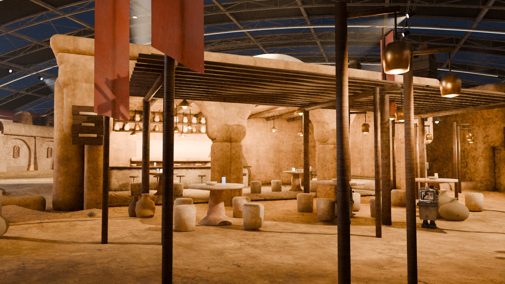
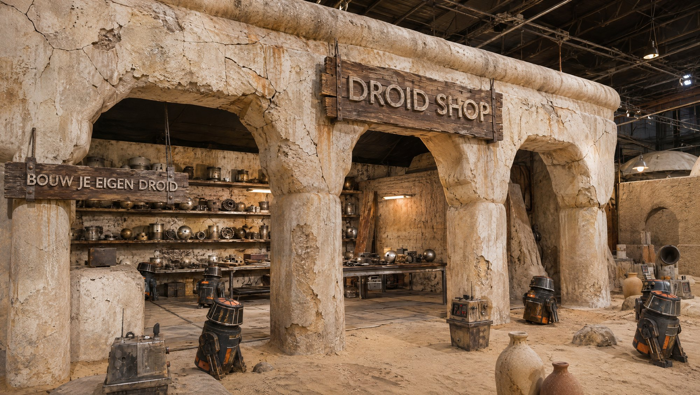

LOGBOEK HARDSKILL
WEEK 2
LV1.3 · BLOK 6Het proces online en de AI laag
Deze week hebben we ons hele proces online gezet als interactieve film in Star Wars stijl. Er is één aflevering per leerdoel, zodat ik in mijn deliverables naar afleveringen kan verwijzen. In aflevering 1 kan je zelf door ons grijze model van de RAI lopen.
We hebben ook de rolverdeling vastgelegd. Ik ben Virtual Experience Master en bewaak de beleving als geheel, Stan is Scrum Master en 3D Model Artist en Elvin is Star Wars Lore Master.
De Blender beelden hebben we door een beeldmodel laten omzetten naar foto’s van een echte set. Dat deden we met twee modellen om te zien welke beter werkt: GPT Image 2.6 en Nano Banana 2.1. De indeling, camera en objecten blijven gelijk, het model verandert alleen het materiaal, het licht en de slijtage.
Twee shots wilde het model niet maken: de cantina door de zuilen en de droids van dichtbij. Waarschijnlijk komt dat door de droids in beeld. Die twee renderen we daarom zelf, ultra realistisch in Blender.
Bewijs




Wat ik leerde
De AI laag maakt de beelden veel echter dan onze renders. Maar het model weigert soms een shot, en dan moet je het zelf doen.